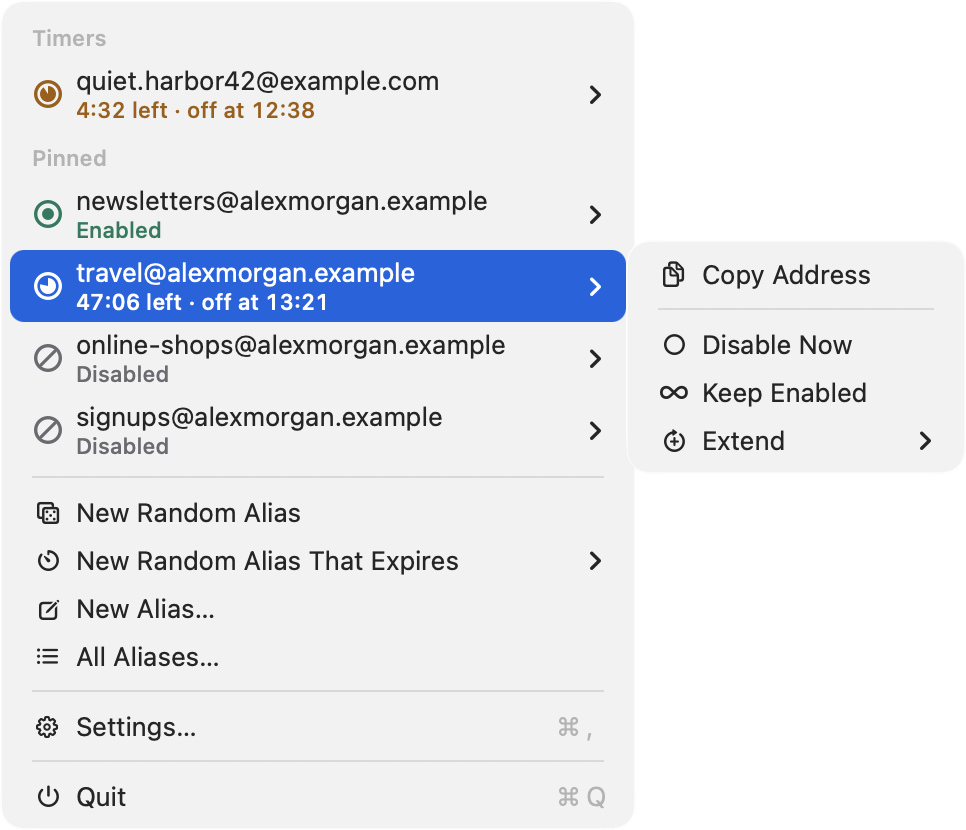
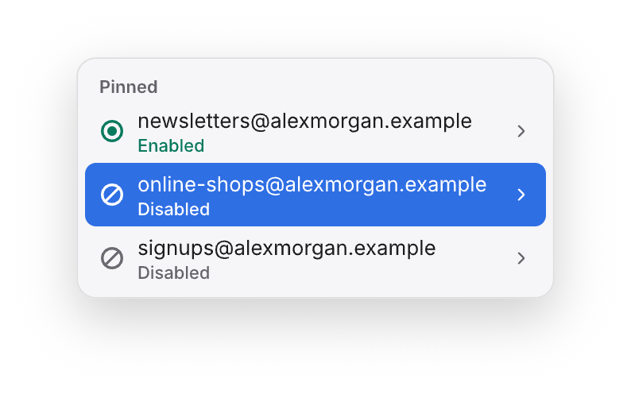
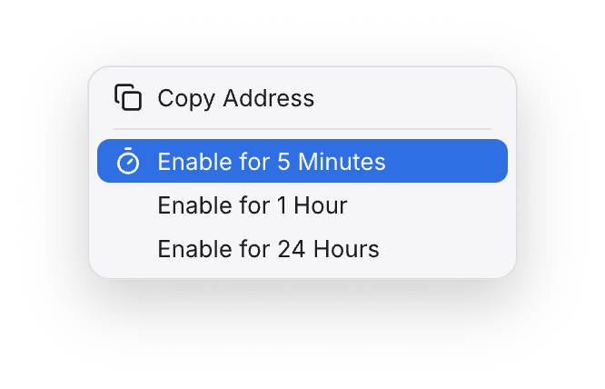
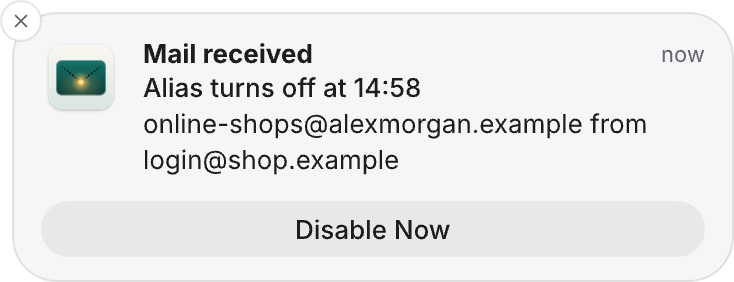
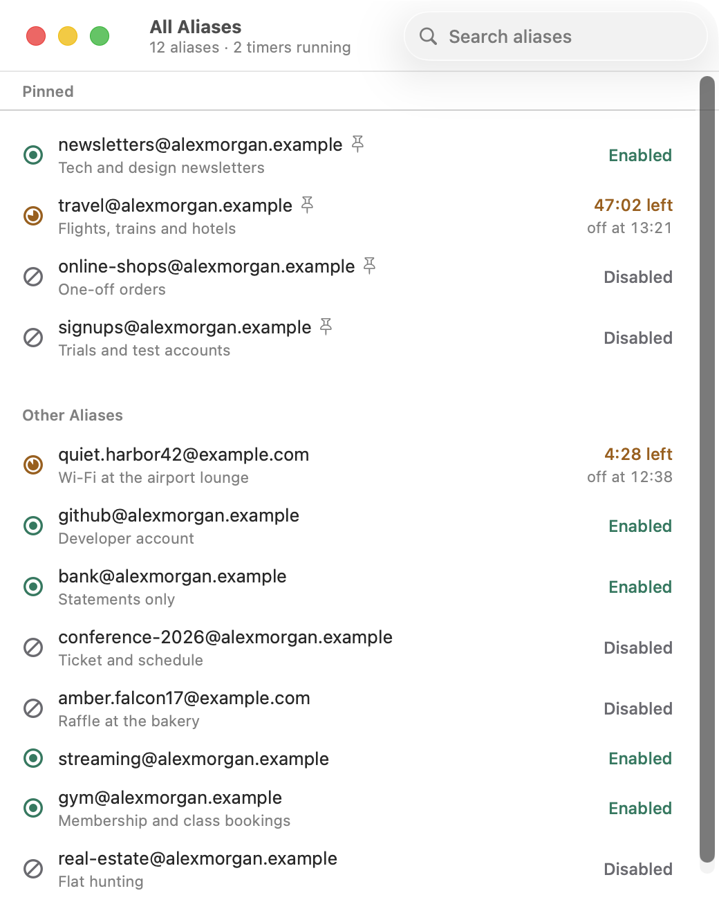
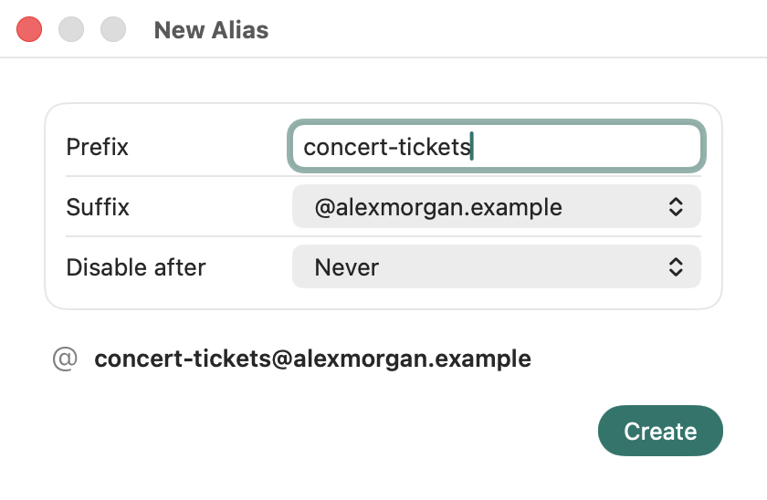
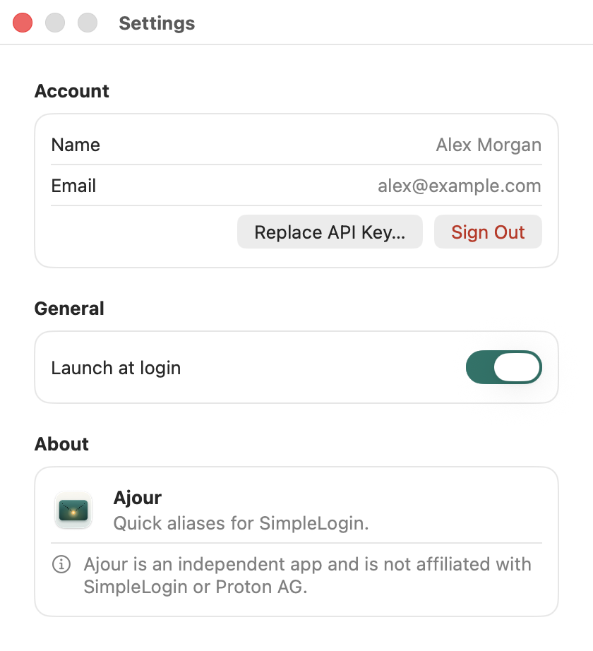

Let the login
code in. Keep the spam out.
Ajour turns a SimpleLogin alias on for a few minutes and off again, from your Mac's menu bar. That's all it does, and it is unreasonably proud of it.
Free and open source · macOS 26 or later

The old way, a tragedy in six acts
- Act IA website wants to email you a login code.
- Act IIIts alias is disabled, because this website has never sent you anything but spam.
- Act IIIYou open the SimpleLogin dashboard and scroll past 200 other aliases to find it.
- Act IVYou enable it, go back, request the code again, and wait.
- Act VThe code arrives. You log in. You feel accomplished.
- Act VIYou forget to disable the alias. Three weeks later, the newsletter finds you.
The end. Nobody claps.
The Ajour way
-

Click the alias in the menu bar.
-

Enable it for 5 minutes and log in.
-

Disable it when the mail arrives.
A notification offers to disable the alias. Ignore it, and Ajour disables it when the time is up.
And this time, there is no Act VI.
Small app, surprisingly many opinions

Timers for aliases.
Turn any pinned alias on for 5 minutes, 1 hour, or 24 hours. The menu counts down and tells you when the alias turns off. You can extend the timer, keep the alias on for good, or turn it off early.
Mail alerts with an off switch.
While a timer runs, Ajour checks the alias every 15 seconds. When mail arrives, the notification has a Disable Now button.
No alias left behind.
If your Mac was asleep or Ajour wasn't running when a timer ended, Ajour disables the alias as soon as your Mac wakes or the app starts again. If you quit Ajour, it disables timed aliases first.
Every alias, searchable.
The All Aliases window searches your whole account. Pin the ones you need to the menu.

New aliases in one click.
Create a random alias and get it on your clipboard, optionally with an expiry date. Or pick your own prefix and one of your custom domains.

Out of your way.
Ajour lives in the menu bar, has no Dock icon, and can start at login. Every alias state has its own symbol and word, and VoiceOver reads them too.
Reviews from the other side
All reviewers are made up. Any resemblance to your inbox is intentional.
"I used to reach 40,000 inboxes before breakfast. Now I reach an alias that was enabled for five minutes, two weeks ago."
"I had a once-in-a-lifetime business opportunity for this person. The alias was disabled before I got to the second paragraph."
"We noticed you haven't opened our emails in a while. We are starting to think it's personal."
"Your package could not be delivered. Neither could my email."
The serious part
We'll stop joking for a moment.
- An API key, never your password.
- Ajour keeps it in your Keychain and nowhere else.
- Two destinations.
- Ajour talks to app.simplelogin.io, and checks ajour.email for updates. Updates download from GitHub.
- No analytics.
- Ajour has no tracking. Its only third-party code is Sparkle, which installs updates, and an update check sends nothing about your Mac.
- Sandboxed.
- The App Sandbox allows outgoing network connections and the hand-off to Sparkle's installer, and nothing else.
- Signed and notarized.
- Releases are signed with a Developer ID and notarized by Apple.
- Open source.
- The code is on GitHub under the MIT license.
- Honest limit.
- SimpleLogin can't disable an alias on a schedule, so the timers run on your Mac. If your Mac sleeps through the end of a timer, the alias stays enabled until it wakes and Ajour is running.
Questions
Is Ajour made by SimpleLogin or Proton?
No. Ajour is an independent app built on SimpleLogin's public API. It is not affiliated with SimpleLogin or Proton AG.
What does it cost?
Nothing. Ajour is free and open source under the MIT license.
What do I need?
A Mac with macOS 26 or later and a SimpleLogin account. Ajour signs in with an API key that you create in SimpleLogin; the setup walks you through it.
What happens if my Mac sleeps while a timer runs?
Ajour disables it as soon as your Mac wakes and the app is running.
Does it work with a self-hosted SimpleLogin?
Not yet. It's planned.
Can I install it with Homebrew?
Not yet. For now, download Ajour, open the disk image and drag Ajour to Applications.